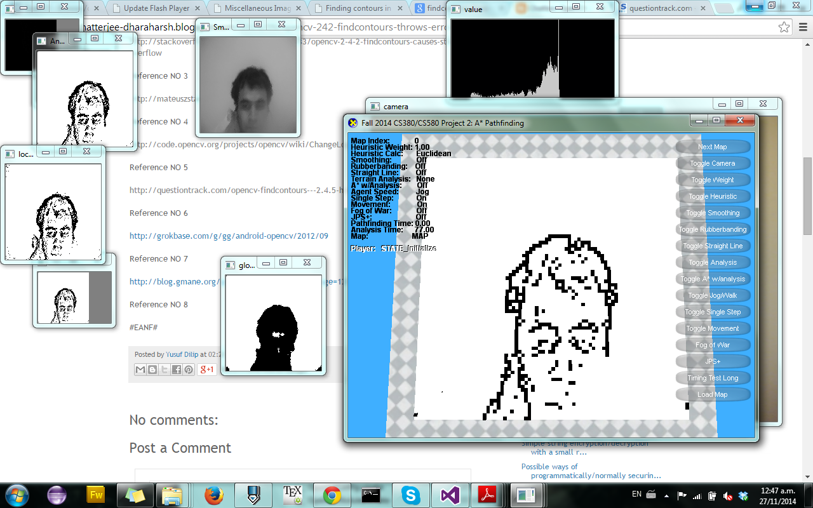
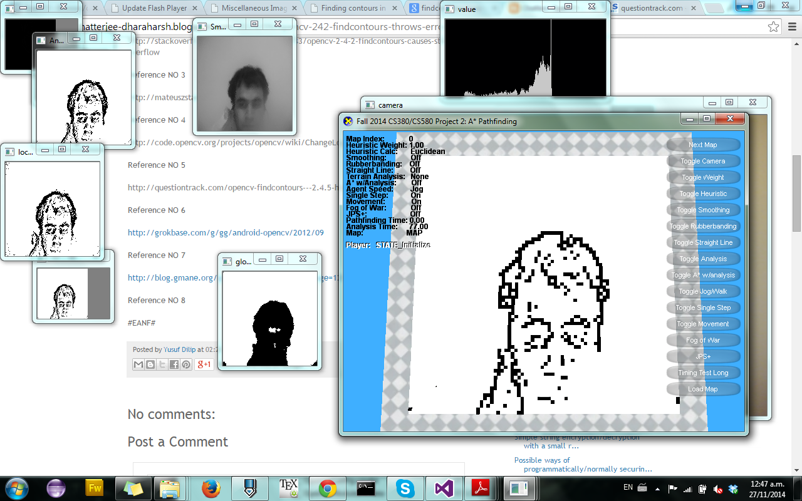
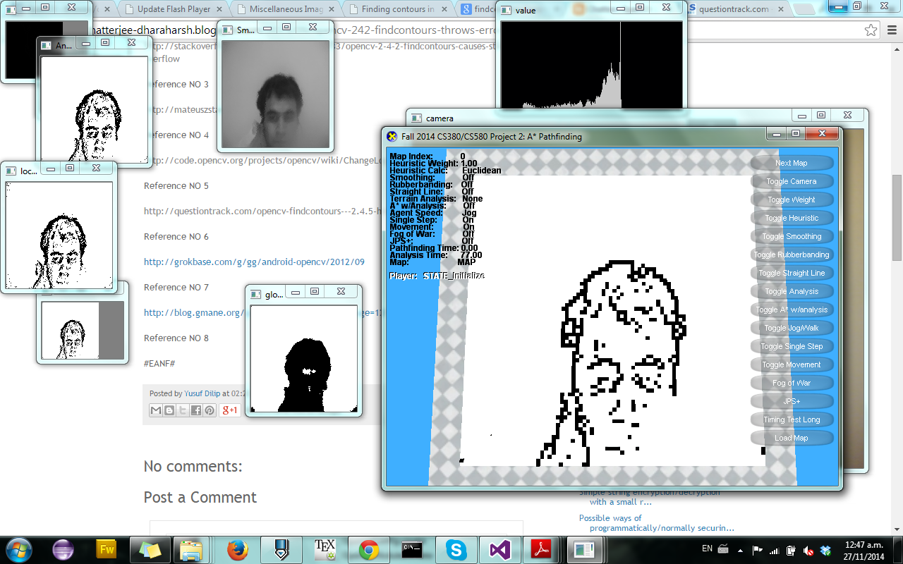

In this project, a group of 5 people and me created a software able to take a photo with the camera of a laptop and generate a map that can be used in pathfinding.
During this project I was in charge of the design of the algorithm for recognizing the map.
The project uses the following technologies:
The next techniques of image processing were used:
The project was also able to recognize some figures by mean of neural networks using the output of the polygonal approximation.
Some of the algorithms were developed in C++, others were taken from the OpenCV library.
